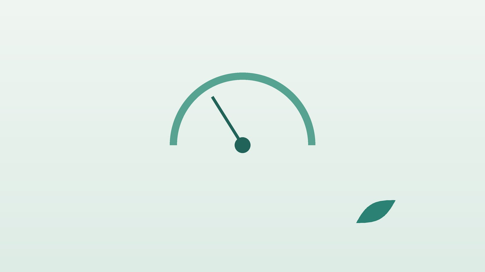

건강 칼럼 · 인천 고혈압 한의원
혈압약과 함께 생활 관리가 필요하다면, 고혈압 한방 관리

나의 혈압, 이런 상황인가요?
- 건강검진에서 혈압이 140/90 이상으로 나온 적이 있다
- 부모나 형제 중 고혈압, 뇌졸중을 앓은 분이 있다
- 짜게 먹고 국물과 젓갈, 라면을 자주 먹는다
- 뒷목이 뻣뻣하고 머리가 무거울 때가 잦다
- 술을 자주 마시고 운동은 거의 하지 않는다
- 코골이가 심하거나 자다가 숨이 멈춘다는 말을 들었다
이 체크리스트는 진단 도구가 아니라 상담이 필요한지 가늠해 보는 참고용입니다.
혈압은 몇부터 높은 건가요?
대한고혈압학회 2022 고혈압 진료지침은 진료실 혈압을 기준으로 120/80mmHg 미만을 정상, 수축기 120~129이면서 이완기 80 미만을 주의혈압, 130~139 또는 80~89를 고혈압 전단계, 140/90 이상을 고혈압으로 나눕니다. 병원에서만 긴장해 높게 나오는 '백의 고혈압'과 반대로 병원에서는 정상인데 집에서 높은 '가면 고혈압'이 있어, 가정혈압 135/85 이상을 함께 기준으로 씁니다.
목표 혈압은 나이와 당뇨, 콩팥병, 심뇌혈관 질환 여부에 따라 달라지며 위험이 높은 분은 130/80 미만으로 더 낮게 잡기도 합니다. 주의혈압과 전단계는 생활 습관 교정이 첫 치료입니다.
바로 119를 불러야 하는 신호
- 갑자기 머리가 깨질 듯 아프고 토한다
- 가슴을 쥐어짜는 통증이 몇 분 이상 이어진다
- 한쪽 얼굴이나 팔다리에 힘이 빠지거나 저리다
- 말이 어눌해지거나 갑자기 한쪽 눈이 안 보인다
- 숨이 가빠 똑바로 눕기 힘들다
혈압이 180/120 이상이면서 위 증상이 있으면 지체하지 말고 119에 연락하세요. 증상 없이 수치만 높다면 앉아서 쉬었다가 다시 재고, 계속 높으면 당일 내과 진료를 받으세요.
가정혈압은 어떻게 재나요?
대한고혈압학회는 가정혈압을 '722'로 기억하도록 안내합니다. 7일 동안, 하루 2번(아침과 저녁), 한 번에 2회씩 재는 방법입니다. 아침에는 일어나 1시간 안에 소변을 본 뒤, 약과 아침 식사 전에 재고, 저녁에는 잠자리에 들기 전에 잽니다.
- 자세: 등을 기대고 앉아 발을 바닥에 붙이고, 팔은 탁자에 올려 커프가 심장 높이에 오게 합니다.
- 준비: 재기 30분 전에는 담배, 커피, 운동을 피하고 1~2분 조용히 앉아 쉽니다.
- 기기: 손목형보다 위팔에 감는 검증된 자동혈압계를 권합니다.
- 기록: 날짜와 시간, 두 번의 수치를 적어 진료 때 함께 보여 주세요.
한의학은 고혈압을 어떻게 보나요?
한의학에는 혈압이라는 개념이 없었지만, 고혈압에 흔히 함께 오는 어지럼과 머리 무거움을 현훈(眩暈), 두통(頭痛)으로 다루었습니다. 『황제내경』은 어지럼의 뿌리를 간(肝)에 두었는데, 스트레스와 분노로 간의 기운이 위로 치솟는 간양상항(肝陽上亢)은 얼굴이 붉고 뒷목이 당기는 고혈압 환자의 모습과 잘 겹칩니다.
기름지고 단 음식으로 몸에 끈적한 노폐물인 담탁(痰濁)이 쌓이면 머리가 맑지 않고 몸이 무거워지며, 나이가 들어 몸의 진액인 음(陰)이 마르면 열이 위로 떠 잠이 얕아진다고 보았습니다. 한방 관리는 혈압약을 대신하는 것이 아니라, 이런 몸의 치우침을 바로잡아 동반 증상을 덜고 생활 습관을 바꾸는 과정을 돕는 데 목적이 있습니다.
나는 어떤 유형일까?
1. 간양상항(肝陽上亢) 치밀어 오르는 유형
- 이런 분에게 많아요
- 성격이 급하고 스트레스가 많은 분
- 나타나는 모습
- 화가 나면 얼굴이 달아오르고 뒷목이 뻣뻣해진다
- 함께 오는 몸의 신호
- 관자놀이 두근거림, 눈이 붉어짐, 쉽게 깸
- 진찰에서 보이는 모습
- 혀 가장자리가 붉고 맥이 활시위처럼 단단함
- 치료 방향
- 치솟는 기운을 내리고 간의 열을 식히는 방향 (천마구등음 계열)
- 오늘부터 해 볼 것
- 화가 날 때 자리를 떠 천천히 숨을 내쉬세요.
2. 담탁중조(痰濁中阻) 무겁고 흐린 유형
- 이런 분에게 많아요
- 체중이 많고 기름진 음식을 즐기는 분
- 나타나는 모습
- 머리가 띵하고 몸이 무거우며 식후 졸리다
- 함께 오는 몸의 신호
- 가래, 더부룩함, 코골이
- 진찰에서 보이는 모습
- 혀가 두툼하고 설태가 끈적함
- 치료 방향
- 담을 삭이고 비위를 도와 머리를 맑게 하는 방향 (반하백출천마탕 계열)
- 오늘부터 해 볼 것
- 저녁 식사 양을 줄이고 식후 20분 걸으세요.
3. 음허양항(陰虛陽亢) 마르고 열이 뜨는 유형
- 이런 분에게 많아요
- 50대 이후, 갱년기 전후의 분
- 나타나는 모습
- 오후에 얼굴이 화끈하고 귀에서 소리가 난다
- 함께 오는 몸의 신호
- 입 마름, 허리·무릎 시큰함, 밤에 자주 깸
- 진찰에서 보이는 모습
- 혀끝이 붉고 마른 듯하며 맥이 가늘게 빠름
- 치료 방향
- 진액을 채우고 뜬 열을 가라앉히는 방향 (기국지황환 계열)
- 오늘부터 해 볼 것
- 잠자리에 들기 전 휴대폰을 멀리 두세요.
4. 기체혈어(氣滯血瘀) 막혀서 뻐근한 유형
- 이런 분에게 많아요
- 오래 앉아 일하고 순환이 떨어진 분
- 나타나는 모습
- 뒷목과 어깨가 굳고 머리가 조이듯 아프다
- 함께 오는 몸의 신호
- 가슴 답답함, 손발 저림
- 진찰에서 보이는 모습
- 혀가 어둡고 반점이 있음
- 치료 방향
- 막힌 기혈을 풀어 순환을 돕는 방향 (혈부축어탕 계열)
- 오늘부터 해 볼 것
- 한 시간마다 일어나 목과 어깨를 풀어 주세요.
한의원에서는 어떻게 진찰하나요?
- 혈압 기록 확인: 가정혈압 수첩과 복용 중인 혈압약, 아스피린 같은 항혈전제를 확인합니다.
- 위험 요인: 당뇨, 콜레스테롤, 흡연, 음주, 수면무호흡, 가족력을 여쭙니다.
- 동반 증상: 두통, 어지럼, 뒷목 뻣뻣함, 불면, 열감의 정도를 기록합니다.
- 설진·맥진·복진: 치솟는 열, 담탁, 진액 부족의 비중을 판단합니다.
침·약침·한약 치료는 어떻게 하나요?
1. 침 치료
- 곡지(曲池): 팔꿈치를 굽혔을 때 생기는 바깥쪽 주름 끝. 위로 뜬 열을 내리는 데 씁니다.
- 태충(太衝): 발등에서 엄지와 둘째 발가락 뼈가 만나는 앞쪽 오목한 곳. 치솟는 간의 기운을 내립니다.
- 풍지(風池): 뒷머리뼈 아래, 목 뒤 굵은 근육 바깥의 오목한 곳. 뒷목 뻣뻣함과 두통에 씁니다.
- 풍륭(豐隆): 바깥 복사뼈와 무릎 바깥 사이의 중간, 정강이 바깥쪽. 담탁을 삭이는 대표 혈입니다.
침이 혈압을 낮춘다는 연구가 있지만 규모가 작고 결과가 엇갈려, 혈압약을 대신할 근거로 볼 수는 없습니다. 아스피린이나 항응고제를 드시면 멍이 잘 들 수 있으니 미리 알려 주세요.
2. 약침과 추나 요법
뒷목과 어깨 근육이 굳어 두통이 잦은 분은 목과 어깨의 관련 경혈에 약침을 시행합니다. 목과 등의 긴장이 큰 분은 진찰 후 추나 요법을 상담할 수 있으며, 혈압이 매우 높은 날에는 시술을 미룹니다.
3. 한약과 약재 주의
감초는 많이 오래 먹으면 몸에 나트륨과 물이 쌓이고 칼륨이 빠져 혈압을 올릴 수 있고, 마황은 에페드린 성분이 혈압과 맥박을 올리므로 고혈압이 있는 분께는 감초의 양을 줄이고 마황은 쓰지 않습니다. 이뇨제를 드시는 분은 칼륨 수치에도 주의합니다. 복용 중인 혈압약을 알려 주시면 확인해 처방합니다. 한약은 원장이 원내 탕전실에서 약재 선별부터 달이는 과정까지 직접 관리하며, 10일분씩 처방해 복용 경과를 보고 약재 구성과 양을 조절합니다.
원장님이 네이버 블로그에 진료 이야기와 건강 정보를 꾸준히 올리고 있습니다. 더 많은 이야기는 블로그에서 확인해 보세요.
블로그 보기관리는 어떤 순서로 진행되나요?
- 측정과 확인 722 방법으로 가정혈압을 재고, 내과에서 진단과 약물 치료 필요 여부를 확인합니다.
- 첫 한방 진료 유형과 동반 증상, 생활 습관을 정리합니다.
- 4~8주 주 1~2회 침 치료와 탕약으로 두통, 뒷목 뻣뻣함, 불면을 관리하며 식단과 운동을 함께 바꿉니다.
- 기록 비교 가정혈압 수첩을 보며 생활 관리의 효과를 확인하고, 약 조절은 담당 의사에게 맡깁니다.
주의혈압이나 고혈압 전단계처럼 아직 약을 먹기 전 단계라면 생활 관리와 함께 한약 위주로 몸을 돌보기도 하지만, 혈압이 140/90 이상으로 이어지면 혈압약 치료를 함께 받아야 합니다.
혈압을 낮추는 생활 관리
- 소금 줄이기: 세계보건기구는 하루 소금 5g(나트륨 2,000mg) 미만을 권합니다. 국물은 건더기 위주로 먹고 젓갈과 장아찌를 줄입니다.
- 유산소 운동: 빠르게 걷기 같은 운동을 하루 30분, 일주일에 5일 이상 해 봅니다.
- 체중: 배 둘레가 줄면 혈압도 함께 내려가는 경우가 많습니다.
- 술과 담배: 술은 줄이고 담배는 끊습니다. 둘 다 혈압과 혈관에 부담을 줍니다.
- 채소와 과일: 칼륨이 많은 채소를 충분히 드시되, 콩팥 기능이 떨어진 분은 먼저 확인하세요.
다른 진료가 함께 필요한 경우
- 30대 이전에 고혈압이 생겼거나 약을 여러 개 써도 조절되지 않으면 이차성 고혈압 검사를 받으세요.
- 코골이와 수면 중 무호흡이 있으면 수면 검사로 확인하세요.
- 당뇨, 콜레스테롤, 콩팥 기능 검사를 정기적으로 받으세요.
- 감기약과 진통소염제 중 일부는 혈압을 올릴 수 있어 약사에게 고혈압이 있다고 말하세요.
자주 묻는 질문 Q&A
- Q1. 혈압이 좋아졌는데 약을 끊어도 되나요?
- 임의로 끊으면 혈압이 다시 오르거나 갑자기 치솟을 수 있습니다. 약 조절은 반드시 담당 의사와 상의하세요.
- Q2. 한약을 먹으면 혈압약을 안 먹어도 되나요?
- 한약은 혈압약을 대신하지 않습니다. 약을 그대로 드시면서 동반 증상과 생활 관리를 돕는 것이 목적입니다.
- Q3. 혈압약과 한약을 같이 먹어도 되나요?
- 대부분 같이 드실 수 있습니다. 복용 중인 혈압약을 알려 주시면 감초 등 주의 약재를 확인해 처방합니다.
- Q4. 뒷목이 뻐근하면 혈압이 오른 건가요?
- 꼭 그렇지는 않습니다. 증상보다 실제로 잰 수치가 중요하니 혈압계로 확인하세요.
- Q5. 병원에서만 혈압이 높게 나와요.
- 백의 고혈압일 수 있어 가정혈압 기록이 진단에 큰 도움이 됩니다.
- Q6. 홍삼을 먹어도 되나요?
- 혈압과 약 복용 상태에 따라 다르니 드시기 전에 알려 주세요.
- Q7. 운동은 어느 정도가 좋나요?
- 숨이 약간 찰 정도의 걷기를 꾸준히 하는 것이 좋습니다. 무거운 물건을 숨 참고 드는 운동은 피하세요.
- Q8. 침 맞기 전에 혈압약을 먹어야 하나요?
- 평소대로 드시고 오시면 됩니다. 진료 전에 혈압을 재고 시작합니다.
문원열 대표원장한의사 · 365스마일한의원
임상 경력 15년, 인천 서구 가정동에서 개원 후 10년째 진료하고 있으며, FCST 턱관절학회·연부조직학회·침도학회 등에서 활동합니다. 아픈 곳만이 아니라 증상의 원인을 찾아 진료합니다.
진료 안내
- 진료시간
- 평일 09:00~20:00 (점심시간 13:00~14:00, 접수 마감 19:30)
토·일·공휴일 09:00~15:00 (접수 마감 14:30) - 주소
- 인천광역시 서구 가경주로 46, 2층 (가정동)
인천2호선 가정중앙시장역 인근
영상으로 길 안내 보기 → - 주차
- 한의원 건물 바로 앞 1층 도원주차장
- 예약
- 예약 바로가기 또는 전화 예약
진료시간은 사정에 따라 바뀔 수 있으니 방문 전 전화로 확인해 주세요.
참고 자료
- 대한고혈압학회. 2022 고혈압 진료지침
- World Health Organization. Guideline: Sodium intake for adults and children, 2012
- 질병관리청 국가건강정보포털 — 원문
※ 이 글은 일반적인 건강 정보이며, 개인의 상태에 따라 치료 방법과 결과는 다를 수 있습니다. 정확한 진단과 치료는 진료를 통해 결정됩니다. 침·약침 시술 후 드물게 멍, 통증 등이 생길 수 있습니다.